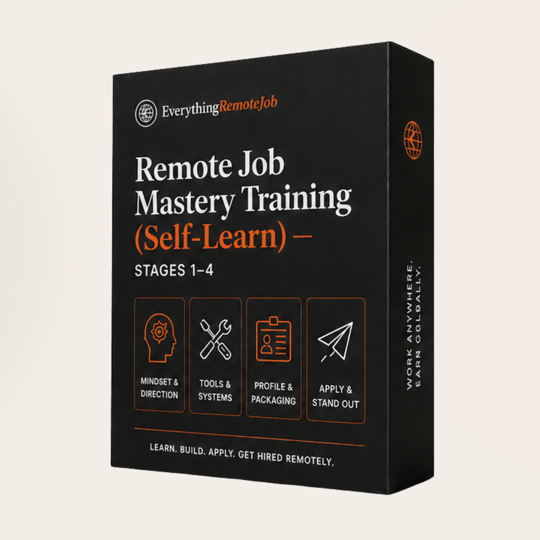

Self-paced edition · Instant download
Remote job training in Nigeria — without waiting for a cohort.
This is self-paced remote job training for people in Nigeria and across Africa who want a dollar-paying remote role. Twenty sessions, four stages, ₦35,000 as a single payment, downloaded the moment you pay — no cohort, no start date, no waiting list.
It covers four stages across twenty sessions: remote work mindset, the digital toolkit and AI fluency, asynchronous communication, and the global job search. The stages, rubrics and exercises are the same ones taught in the live cohorts. It does not include live teaching, a marked verdict on your work, a certificate, or placement support.
Six files, four deliverables you keep, and an invite to the private Telegram community.

Why searches stall
It fails at one point. Almost nobody knows which.
Most remote job searches don't fail because the person isn't good enough. They fail at one of four points — and the months get spent repairing the other three.
This training works all four, in order. By the end you won't just know more — you'll be holding four finished assets that a distributed employer is actually looking for.
What you work through
Twenty sessions. Four deliverables.
Remote Mindset Blueprint
Who can legally hire and pay you from where you are, and how to tell in sixty seconds. What remote work actually demands of you. How to diagnose which of the four points is costing you offers. How to turn your time zone from an apology into a number that wins interviews.
Digital Toolkit Mastery & AI Fluency
The tool stack employers assume you already have, and the four operations you must be able to perform in each. How to prove tool fluency when you've never held a remote job. And AI fluency at the level that gets you hired instead of caught: draft, attack, rewrite, ship what survives.
Asynchronous Communication Mastery
On a distributed team, your writing isn't a report on your competence — it is your competence, as far as anyone can tell. Build the five artifacts that make your work visible, your absence survivable and your knowledge portable.
Global Job Search Mastery
The full ten-point CV rubric, published — the same one our scanner scores against. The rebuild loop. LinkedIn, portfolio and the one-page proof of work. The five checks before you apply. The application ledger that turns a demoralising process into a diagnosable one. Interviews, written rounds, and what to say when they ask for your number first.
What's in the pack
One folder. Six items.
Honest fit
Who this is for — and who it isn't.
This is for you if
- You're employed or job-seeking in Nigeria (or anywhere outside the US/EU) and you want a dollar-paying remote role.
- You've been applying and hearing nothing, and you can't tell whether the problem is your CV, your targeting, or the companies you're choosing.
- You have some real work experience — even one or two years — and no idea how to make it legible to a remote employer.
- You'd take the live cohort if you could, but you want to start now and at your own pace.
This is not for you if
- You want a job handed to you. This isn't placement — it makes you hireable, it doesn't apply on your behalf.
- You won't do work you're not being watched doing. Be honest with yourself; the live cohort exists precisely for this, and you should take that instead.
- You want a certificate. This edition doesn't carry one. The live training does.
Be clear on what this does and doesn't include
All four stages, all twenty sessions, every rubric and template, the six items above, and the community.
Live teaching, a facilitator's written verdict on your deliverables, a certificate, or placement support. Those live in our Remote Job Foundation Training (live cohort) and Job Application DFY (Stage 5). Buyers of this edition can ask about the credit applied toward them.
No training controls the market or the timing. Some people are hired in six weeks; some take over a year. What this removes is the version where you spend that time without ever knowing which of the four points was failing.
The price
One payment. Yours permanently.
One-time · instant download · no subscription, nothing to cancel
Paying by transfer? Message our Registrar on WhatsApp for the Business Play account details, send ₦35,000, and reply with your receipt. Access goes out the same day. Card, bank transfer and USSD all work through Selar if you'd rather it be instant.
Already in a live cohort? You don't need this — you have all of it and more. This edition exists for the people who can't sit a cohort yet. Still deciding? Read the honest comparison of this pack and the live training.
How you get it
Instant download. Then thirty minutes.
Refunds: the pack is delivered in full the moment payment clears, so it is not refundable once downloaded. If you want to see the standard of the work before you pay, the free diagnostic and the 114 free articles are the same voice and the same method.
Questions about access or payment: WhatsApp our Registrar on +234 803 292 5957 with your Selar order reference.
Start today, at your own speed.
Four stages, twenty sessions, four finished assets — and the honest map of which of the four points is actually costing you offers.